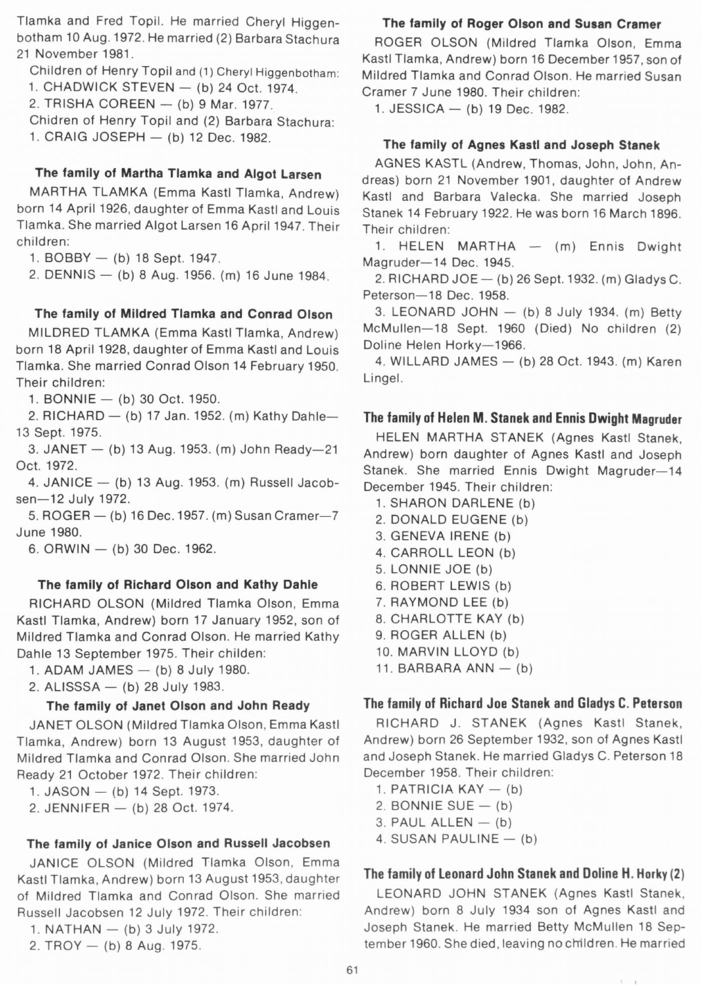

The book · The Family of Andrew Kastl
Page 61 The family of Martha Tlamka and Algot Larsen


Transcription
Tlamka and Fred Topil. He married Cheryl Higgenbotham 10 Aug. 1972. He married (2) Barbara Stachura 21 November 1981.
Children of Henry Topil and (1) Cheryl Higgenbotham:
- CHADWICK STEVEN — (b) 24 Oct. 1974.
- TRISHA COREEN — (b) 9 Mar. 1977.
Chidren of Henry Topil and (2) Barbara Stachura:
- CRAIG JOSEPH — (b) 12 Dec. 1982.
The family of Martha Tlamka and Algot Larsen
MARTHA TLAMKA (Emma Kastl Tlamka, Andrew) born 14 April 1926, daughter of Emma Kastl and Louis Tlamka. She married Algot Larsen 16 April 1947. Their children:
- BOBBY — (b) 18 Sept. 1947.
- DENNIS — (b) 8 Aug. 1956. (m) 16 June 1984.
The family of Mildred Tlamka and Conrad Olson
MILDRED TLAMKA (Emma Kastl Tlamka, Andrew) born 18 April 1928, daughter of Emma Kastl and Louis Tlamka. She married Conrad Olson 14 February 1950. Their children:
- BONNIE — (b) 30 Oct. 1950.
- RICHARD — (b) 17 Jan. 1952. (m) Kathy Dahle—13 Sept. 1975.
- JANET — (b) 13 Aug. 1953. (m) John Ready—21 Oct. 1972.
- JANICE — (b) 13 Aug. 1953. (m) Russell Jacobsen—12 July 1972.
- ROGER — (b) 16 Dec. 1957. (m) Susan Cramer—7 June 1980.
- ORWIN — (b) 30 Dec. 1962.
The family of Richard Olson and Kathy Dahle
RICHARD OLSON (Mildred Tlamka Olson, Emma Kastl Tlamka, Andrew) born 17 January 1952, son of Mildred Tlamka and Conrad Olson. He married Kathy Dahle 13 September 1975. Their childen:
- ADAM JAMES — (b) 8 July 1980.
- ALISSSA — (b) 28 July 1983.
The family of Janet Olson and John Ready
JANET OLSON (Mildred Tlamka Olson, Emma Kastl Tlamka, Andrew) born 13 August 1953, daughter of Mildred Tlamka and Conrad Olson. She married John Ready 21 October 1972. Their children:
- JASON — (b) 14 Sept. 1973.
- JENNIFER — (b) 28 Oct. 1974.
The family of Janice Olson and Russell Jacobsen
JANICE OLSON (Mildred Tlamka Olson, Emma Kastl Tlamka, Andrew) born 13 August 1953, daughter of Mildred Tlamka and Conrad Olson. She married Russell Jacobsen 12 July 1972. Their children:
- NATHAN — (b) 3 July 1972.
- TROY — (b) 8 Aug. 1975.
The family of Roger Olson and Susan Cramer
ROGER OLSON (Mildred Tlamka Olson, Emma Kastl Tlamka, Andrew) born 16 December 1957, son of Mildred Tlamka and Conrad Olson. He married Susan Cramer 7 June 1980. Their children:
- JESSICA — (b) 19 Dec. 1982.
The family of Agnes Kastl and Joseph Stanek
AGNES KASTL (Andrew, Thomas, John, John, Andreas) born 21 November 1901, daughter of Andrew Kastl and Barbara Valecka. She married Joseph Stanek 14 February 1922. He was born 16 March 1896. Their children:
- HELEN MARTHA — (m) Ennis Dwight Magruder—14 Dec. 1945.
- RICHARD JOE — (b) 26 Sept. 1932. (m) Gladys C. Peterson—18 Dec. 1958.
- LEONARD JOHN — (b) 8 July 1934. (m) Betty McMullen—18 Sept. 1960 (Died) No children (2) Doline Helen Horky—1966.
- WILLARD JAMES — (b) 28 Oct. 1943. (m) Karen Lingel.
The family of Helen M. Stanek and Ennis Dwight Magruder
HELEN MARTHA STANEK (Agnes Kastl Stanek, Andrew) born daughter of Agnes Kastl and Joseph Stanek. She married Ennis Dwight Magruder—14 December 1945. Their children:
- SHARON DARLENE (b)
- DONALD EUGENE (b)
- GENEVA IRENE (b)
- CARROLL LEON (b)
- LONNIE JOE (b)
- ROBERT LEWIS (b)
- RAYMOND LEE (b)
- CHARLOTTE KAY (b)
- ROGER ALLEN (b)
- MARVIN LLOYD (b)
- BARBARA ANN — (b)
The family of Richard Joe Stanek and Gladys C. Peterson
RICHARD J. STANEK (Agnes Kastl Stanek, Andrew) born 26 September 1932, son of Agnes Kastl and Joseph Stanek. He married Gladys C. Peterson 18 December 1958. Their children:
- PATRICIA KAY — (b)
- BONNIE SUE — (b)
- PAUL ALLEN — (b)
- SUSAN PAULINE — (b)
The family of Leonard John Stanek and Doline H. Horky (2)
LEONARD JOHN STANEK (Agnes Kastl Stanek, Andrew) born 8 July 1934 son of Agnes Kastl and Joseph Stanek. He married Betty McMullen 18 September 1960. She died, leaving no children. He married
People from the line of descent on this page
- Agnes Kastl b. 1901
- Martha Tlamka b. 1926
- Mildred Tlamka b. 1928
- Henry J. Topil b. 1952
- Chadwick Steven Topil b. 1974
- Trisha Coreen Topil b. 1977
- Craig Joseph Topil b. 1982
- Bobby Larsen b. 1947
- Dennis Larsen b. 1956
- Bonnie Olson b. 1950
- Richard Olson b. 1952
- Janet Olson b. 1953
- Janice Olson b. 1953
- Roger Olson b. 1957
- Orwin Olson b. 1962
- Adam James Olson b. 1980
- Alisssa Olson b. 1983
- Jason Ready b. 1973
- Jennifer Ready b. 1974
- Nathan Jacobsen b. 1972
- Troy Jacobsen b. 1975
- Jessica Olson b. 1982
- Joseph Stanek b. 1896
- Helen Martha Stanek
- Richard Joe Stanek b. 1932
- Leonard John Stanek b. 1934
- Willard James Stanek b. 1943
- Sharon Darlene Magruder
- Donald Eugene Magruder
- Geneva Irene Magruder
- Carroll Leon Magruder
- Lonnie Joe Magruder
- Robert Lewis Magruder
- Raymond Lee Magruder
- Charlotte Kay Magruder
- Roger Allen Magruder
- Marvin Lloyd Magruder
- Barbara Ann Magruder
- Patricia Kay Stanek
- Bonnie Sue Stanek
- Paul Allen Stanek
- Susan Pauline Stanek
- Doline Helen Horky
Transcriber’s notes
Opens mid-sentence continuing the Henry J. Topil entry from the previous page ('Tlamka and Fred Topil...'); ends mid-sentence ('He married') in the Leonard John Stanek entry. Print typos kept: 'Chidren', 'childen', 'ALISSSA'. Helen Martha Stanek entry has 'born' with no date; Magruder and Richard Joe Stanek children have '(b)' with no dates. Three headings (Helen M. Stanek..., Richard Joe Stanek..., Leonard John Stanek...) are set in a condensed bold typeface, with 'Magruder' and 'Horky (2)' in smaller type. 'and (1) Cheryl Higgenbotham' in the Henry Topil children line is in smaller type.